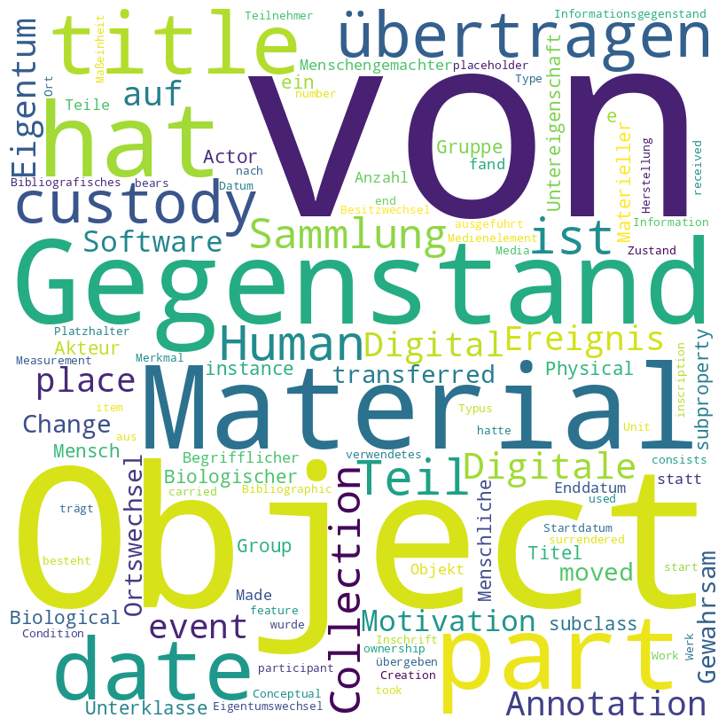

Die barocken Schloss- und
Gartenveduten
Versuch eines PDF-Buchs
Jane Doe1 , * , Maxine Mustermann2 , * and Neptune III. 3
=1em 1. Minnesota Department of Natural Resources , 500 Lafayette Road Saint Paul, MN 55155
=1em 2. University of Minnesota , Department of Mathematics
=1em 3. University of Somewhere , Department of Marine Biology
* Correspondence: Jane Doe jd@college.edu * Correspondence: Maxine Mustermann mm@um-mail.edu
TIB
Open Science Lab
Ein Katalog mit Kunstwerken aus der CbDD-Sammlung. Textteil: 6e73f774-4b7f-4e37-937b-e11cc35c5bc8
Die barocken Schloss- und Gartenveduten [Sammlung]
This work is licensed under a Creative Commons Attribution-NonCommercial-NoDerivs 4.0 International License.
Wikibase link: https://computational-publishing-service.wikibase.cloud/entity/Q252
Kurator: Seeger, Ulrike
Breites Format. Vorne rechts ins Bild hineinreitende Reiter mit großen Fahnen. Im Hintergrund die ungarische Festung Totis (Tata) nach dem Vorbild von Sibmachers Kupferstich, der allerdings eine Eroberung durch die Christen aus dem Jahr 1597 wiedergibt. Die sehr dunkle Szenerie wird von zwei Laternen spärlich erleuchtet. Da Totis nicht 1590, sondern 1597 und 1598 durch die Christen erobert wurde, und zudem zu den zeitlich als nächste dargestellten Belagerungen eine Zeitspanne von vier Jahren liegt, kann es gut sein, dass der Jahreszahl 1590 ein Versehen zugrunde liegt.
Wikibase link: https://computational-publishing-service.wikibase.cloud/entity/Q253
Kurator: Seeger, Ulrike
Schmales Format. Vorne links ein Hellebardier mit einem Knecht, der mit schwarzen Kugeln als Munition hantiert. Von rechts kommt dynamisch ein Reiter mit rotem Mantel, schwarzem Zylinder und möglicherweise einer Trompete im Arm ins Bild geritten. Da an der versuchten Einnahme von Gran (Eszergom) im Jahr 1594 Graf Georg Friedrich, der älteste Sohn von Graf Wolfgang II., als kaiserlicher Obrist beteiligt war,[1] darf man den Reiter im roten Mantel vermutlich mit diesem identifizieren. Sein Gesicht folgt mit hellem Teint, roten Bäckchen, hoher Stirn, Schnauzbart und fein geschwungenen Augenbrauen dem des Grafen Wolfgang auf den Deckengemälden des Rittersaals mit dem Unterschied, dass es von dunkelbraunem Haar gerahmt wird.
Im Mittelgrund blickt man auf das Feldlager der kaiserlichen Armee. Von einer Verschanzung in den Donauauen wird am gegenüberliegenden Ufer die Wasserstadt von Gran beschossen. Darüber liegt die Festung Gran mit der Doppelturmfassade der Kathedrale. Mehrere Minarette deuten die türkische Herrschaft an. Die Ansicht folgt nicht dem Kupferstich von Sibmacher, der Gran von einem anderen Blickwinkel und zudem summarischer zeigt. Ohnehin hat Sibmacher nicht die Belagerung des Jahres 1594, sondern die des Jahres 1595 dargestellt. Da Georg Friedrich an dem Ereignis 1594 beteiligt war, dürfte die Weikersheimer Darstellung auf Flugblätter oder bebilderte Zeitungsberichte zurückgehen, die es mannigfach zu den Ereignissen des Langen Türkenkriegs gab. Der von links mit einer Drehung ins Bild hineinreitende Reiter hat sein Vorbild in einem Stich von Stradanus zur Wolfsjagd (Nachdruck Olms, Tf. 20).
[1] Trentin-Meyer, Georg Friedrich von Hohenlohe, 2019, S. 90.
Wikibase link: https://computational-publishing-service.wikibase.cloud/entity/Q254
Kurator: Seeger, Ulrike
Breites Format. Von rechts kommen türkische Reiter ins Bild. Im Mittelgrund ist am gegenüberliegenden Ufer der Donau die quadratische Festung Raab (Győr) zu erkennen. Ihre Eckbastionen und die Bastion an einer links zusätzlich stumpfwinkelig vorstoßenden Ecke sind mit Kanonen besetzt. Die vom Feldlager der Türken umzingelte Festung wird heftig beschossen. Im Vordergrund spielt sich am linken unteren Bildrand ein Nahkampf zwischen Christen und Türken ab, der sich neben zwei Transportkutschen entzündet hat. Die Darstellung der Festung und der Kampfhandlungen folgt getreu der Vorlage bei Ortelius.
Wikibase link: https://computational-publishing-service.wikibase.cloud/entity/Q255
Kurator: Seeger, Ulrike
Breites Format. Von links kommen türkische Reiter ins Bild, von denen ein blau gekleideter Frontmann eine lange Lanze mit blauer Fahne dynamisch diagonal ins Bild stößt. Rechts unten knien vor türkischen Zelten zwei Dromedare. Den Höcker des vorderen Dromedars bedeckt ein blaues Tuch mit aufgesticktem Sonnensymbol. Der Mittelgrund ist durch den Verlauf der Donau zweigeteilt. Am Ufer im Vordergrund formiert sich ein türkisches Heer. Auf der gegenüberliegenden Seite liegt die von den Christen gehaltene Festung von Komorn (Komárom). Sie überstand die Belagerung unversehrt, während die hinter der Festung anschließende Stadt in Flammen steht.
Die Festung Komorn besetzte eine Landspitze an der Mündung der Waag in die Donau. Sie wurde von dem kaiserlichen Festungsbaumeister Pietro Ferrabosco unterstützt durch Daniel Specklin auf einem dreieckigen Grundriss angelegt. Die türkische Belagerung 1594 überstand sie unversehrt. In der Folgezeit wurde sie verstärkt und weiterhin nicht eingenommen. Mit der Darstellung der Festung und der brennenden Stadt Komorn folgte Katzenberger treu dem Vorbild Sibmachers. Die Anregung zu den beiden Dromedaren im Vordergrund erhielt er ebenfalls von Sibmacher, der die Dromedare als Reittiere der Osmanen im Vordergrund allerdings nur klein darstellte.
Wikibase link: https://computational-publishing-service.wikibase.cloud/entity/Q256
Kurator: Seeger, Ulrike
Breites Format. Im Vordergrund links beugt sich eine Rückenfigur nach vorne, sodass sie dem Betrachter den Hintern zeigt. Am rechten unteren Bildrand steht die Halbfigur eines Höflings mit Flinte und braunem Pferd. Dem Gesicht nach zu urteilen, handelt es sich um einen der Söhne von Graf Wolfgang. Im Mittelgrund ist eine Schlacht mit türkischen Reitern mit langen Lanzen zu sehen. Den Hintergrund bildet eine im Dunkeln liegende Hügellandschaft, in der auf einem Berg die Festung Gran (Győr), am Ufer der Donau die zugehörige Wasserstadt und vor allem die ebenfalls befestigte Ratzenstadt (Rácvázószöveg) gut zu erkennen sind. Die Landschaft folgt treu der Vorlage bei Ortelius.
Die Fahnen lassen den Stand der Eroberung erkennen, was sich dem heutigen Betrachter nur noch mithilfe der Erläuterungen auf dem Kupferstich bei Ortelius erschließt. Über der Festung Gran, die laut Ortelius am 3. August eingenommen wurde, weht klein noch die türkische Fahne mit einer gelben Sonne auf rotem Grund. Über der Ratzenstadt, die im Juli als erstes erobert wurde, weht groß die Fahne der Kaiserlichen mit gewelltem weißem Andreaskreuz auf rotem Grund. Die Wasserstadt, über der bei Katzenberger die kaiserliche Fahne mit dem Reichsadler auf goldenem Grund steht, wurde laut Ortelius Ende August erobert, sodass mit Ende August der zur Darstellung gelangte Zeitpunkt getroffen sein dürfte.
Wikibase link: https://computational-publishing-service.wikibase.cloud/entity/Q257
Kurator: Seeger, Ulrike
Breites Format. Im Vordergrund stehen in der linken Bildhälfte zwei prächtig gekleidete Offiziere, einer als Rückenfigur mit Rüstung und Federbusch, einer mit grau schimmerndem Gewand und auffälligem Helm. Derjenige im grauen Gewand wendet den Blick dem Betrachter zu. Da an der Belagerung der Neffe von Papst Clemens VIII., Giovanni Francesco Aldobrandini, beteiligt war, könnte es sich um diesen und einen Begleiter handeln. Rechts vorne machen sich Männer an Kanonen zu schaffen. Im Hintergrund erhebt sich charakteristisch auf einem kegelförmigen Berg am Ufer der Donau die Zitadelle von Visegrád. Sie beherrscht einen großen natürlichen Hafen mit zahlreichen Transportschiffen. Das Gemälde lebt stimmungsvoll von silbrigen Grautönen, aus denen vereinzelt rote Fahnen und andere Details rot herausleuchten.
Wikibase link: https://computational-publishing-service.wikibase.cloud/entity/Q258
Kurator: Seeger, Ulrike
Schmales Format. Rechts im Vordergrund reitet ein Türke mit Turban und Streitkolben frontal auf den Betrachter zu. Links unter ihm steht ein türkisches Zelt. Im Hintergrund liegt an der Donau Waitzen (Vác), das sich aus einer befestigten Stadt und einem befestigten Kloster zusammensetzt. In der Stadt, an deren Rand sich eine Moschee befindet, brennen mehrere Häuser. Verglichen mit dem Kupferstich bei Ortelius sind Stadt und Kloster seitenverkehrt dargestellt.
Wikibase link: https://computational-publishing-service.wikibase.cloud/entity/Q259
Kurator: Seeger, Ulrike
Schmales Format. Katzenberger hat die Belagerung effektvoll als Nachtbild vergegenwärtigt. Vorne rechts stehen zwei Wachsoldaten, deren Rüstungen und Gewänder im Schein der Laternen aufleuchten. Im Hintergrund liegt die Festung Raab (Győr), an deren Bastionen sich an zwei Stellen große Explosionen ereignen. Katzenberger hat sie mitsamt den Feuerherden exakt von Sibmacher übernommen.
Wikibase link: https://computational-publishing-service.wikibase.cloud/entity/Q260
Kurator: Seeger, Ulrike
Breites Format. Im Vordergrund steht eine große Kanone, die von Pferden nach links aus dem Bild gezogen wird. Auf der Kanone sitzt der Kutscher mit Pelzmütze, mongolisch anmutendem Bart und rotem Mantel. Er schwingt eine lange Peitsche. Am rechten Bildrand steht ein junger, ebenfalls mongolisch aussehender Mann in einem hellen Wams. Hinter der fahrenden Kanone rennt ein Jagdhund her.
Im Hintergrund erstreckt sich Ofen (Óbuda, heute Buda als Stadtteil von Budapest) als prächtige Stadt mit hoher Stadtmauer, einem Schloss, zahlreichen Kirchen und Minaretten sowie außerhalb der Mauern einem Lustgarten mit Pavillon. Der Lustgarten ist dem Schloss, auf dem bei Ortelius eine türkische Fahne weht, unmittelbar vorgelagert. Im Mittelgrund liegt ebenfalls außerhalb der Stadtmauern ein türkischer Friedhof mit zahlreichen Grabsteinen und einem runden gedrungenen Turm in der Mitte. Katzenberger hat die Stadtansicht mitsamt der Schilderung des Lustgartens und des Friedhofs von Sibmacher übernommen.
Wikibase link: https://computational-publishing-service.wikibase.cloud/entity/Q261
Kurator: Seeger, Ulrike
Breites Format. Vorne rechts reitet auf einem grauen Pferd ein gerüsteter kaiserlicher Heerführer mit weißem Federbusch ins Bild. Seinem Gesichtsschnitt und dem blonden Bart zufolge handelt es sich um einen Sohn von Graf Wolfgang. Vor ihm läuft ein Knappe mit prächtigem roten Mantel, rotem Federbusch und einem Gewehr über der Schulter. Er weist ihm den Weg zum Feldlager. Hinter dem Feldlager stehen auf der anderen Seite eines Donauzuflusses Truppen in Aufstellung. An einer Verschanzung werden Kanonen gezündet. Der Geländezipfel zwischen Donau und Zufluss ist mit einer dreieckigen Festung besetzt, zu der sich eine Schiffbrücke spannt. Die in der vorangegangenen Belagerung von Ofen aus dem Jahr 1598 prächtig geschilderte Stadt Ofen (Óbuda, heute Buda als Stadtteil von Budapest) befindet sich auf dem Gemälde angeschnitten am linken Bildrand. Sie ist an den vorgelagerten Donauinseln zu erkennen, auf die weitere Schiffbrücken führen.
Katzenberger konnte für die Belagerung von 1703 nicht mehr auf Ortelius zurückgreifen, dessen Werk 1702 erschien. Vermutlich orientierte er sich an Schilderungen des Sohnes und übernahm die Flussmündung mit der dreieckigen Festung aus der Darstellung einer anderen Belagerung, da sie sich auf Karten der Donau bei Buda nicht finden lässt.
Wikibase link: https://computational-publishing-service.wikibase.cloud/entity/Q262
Kurator: Seeger, Ulrike
Schmales Format. Im Vordergrund stehen zwei von hinten gezeigte Pferde, die mit Kanonenrohren, Wagenrädern und Pauken beladen sind. Neben ihnen geht rechts ein schwarz gekleideter Mann mit grauem Schlapphut. Im Hintergrund zieht sich in starker Aufsicht wie auf einer Landkarte die Donau bei Ofen (Óbuda) und Pest mit den Donauinseln hin. Hinter dem Fluss hat Katzenberger klein das Scharmützel dargestellt. Es spielt sich auf offenem Terrain ab vor einem Zeltlager und einem Hügel, von dem aus Kanonen gezündet werden. Links oben im Bild ist die breit gelagerte befestigte Stadt Ofen zu sehen.
Die Belagerung von 1603 war nicht mehr in der 1602 erschienenen Chronik von Ortelius enthalten. Vermutlich wurde sie in den Zyklus aufgenommen, weil ein Sohn Graf Wolfgangs daran beteiligt war. Das Gemälde stammt dem Aufbau und der Malweise zufolge von Katzenberger. In Ermangelung einer Vorlage behalf er sich für den Verlauf der Donau einer Landkarte. Die Festungen im Mittel- und Hintergrund konnte er aus den vorangegangenen Belagerungen entwickeln.
Wikibase link: https://computational-publishing-service.wikibase.cloud/entity/Q263
Kurator: Seeger, Ulrike
Breites Format. Im Vordergrund ein ausnahmsweise mit seiner Breitseite vorgestelltes braunes Pferd, dessen Reiter sich dem Betrachter frontal zuwendet. Der Reiter trägt keine Rüstung, sondern ein wollweißes Wams, einen rotsamtenen Rock mit Goldbesatz und über der Brust eine voluminöse rote Schärpe. Die Schärpe wird von einem auffälligen Schmuckring zusammengehalten, ihr loses Ende flattert im Wind zusammen mit dem Schweif des Pferdes. Der Reiter trägt einen breitkrempigen schwarzen Hut mit Goldrand und rotem Federbusch. Bei dem Dargestellten handelt es sich um Graf Ludwig Kasimir, der jüngste Sohn von Graf Wolfgang, der bei der Belagerung von Gran (Eszergom) im Jahr 1604 sein Leben ließ. Sein ernstes hochovales Gesicht mit blonden Haaren und schwachem Bartwuchs folgt dem Gesichtstyp, der auf den Deckengemälden des Rittersaals mehrfach Graf Wolfgang zuzuordnen war.
Am unteren Bildrand ist deutlich kleiner und einer anderen Realitätsebene angehörend eine höfisch gekleidete Frau zu sehen, der von einem Soldaten der Weg gewiesen wird. Es könnte sich hierbei um die Mutter des kinderlos verstorbenen Sohns, Magdalena von Nassau-Katzenelnbogen handeln. Sie hält in der rechten Hand einen Stieglitz, der wegen seines blutroten Kopfgefieders und goldener Flugfedern als Symbol des Opfertods Christi galt.[1] Der schwarze Salamander auf ihrer linken Brust war ein geläufiges Sinnbild der Auferstehung Christi und brachte die Hoffnung auf ein Leben nach dem Tod zum Ausdruck. Auf ihrer Schulter sitzt ein Äffchen, das an die Eitelkeit des Menschen gemahnen könnte. Hinter dem Paar geht ein Knecht mit traurigem Gesichtsausdruck.
Im Hintergrund verläuft als großzügig geschwungener Bogen die Donau, an deren Ufer eine ringförmig mehrfach befestigte Zitadelle und mehrere befestigte Höhenzüge zu sehen sind. Der Blickwinkel auf den Fluss ist zwar sehr exponiert, doch ist er – im Unterschied zur Belagerung von Ofen 1603 – nicht minutiös einer Landkarte entnommen. Der Duktus der Landschaft, des Himmels und des Laubs des Repoussoir-Baums am rechten Bildrand ist nicht der von Balthasar Katzenberger. Die Wolken haben weiße Ränder, einige Blätter sind hell gezeichnet als ob würden sie von der Sonne beschienen.
[1] http://www.rdklabor.de/wiki/Fink, allerdings ohne dass dies durch Quellen nachgewiesen werden könnte.
Wikibase link: https://computational-publishing-service.wikibase.cloud/entity/Q283
Title: Die barocken Schloss- und Gartenveduten bild
Year: 2018
Description: Bild für Die barocken Schloss- und Gartenveduten
Wikibase link: https://computational-publishing-service.wikibase.cloud/entity/Q283
Title: Die barocken Schloss- und Gartenveduten bild
Year: 2018-01-01T00:00:00Z
Description: Bild für Die barocken Schloss- und Gartenveduten
